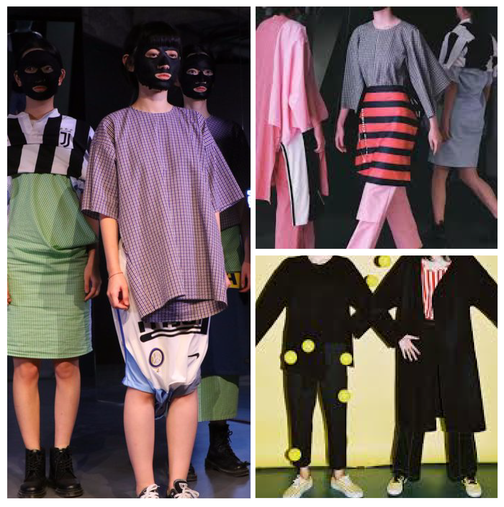

介紹一下你自己吧

我是一名时装设计师，目前在上海。 我在2002年创立了自己的品牌号称“无边”。我有点复杂的人
你喜欢些什么？他们怎么引响你？
我很喜欢中文字体。 好的书法，刻字和街头手写标志对我来说非常有意思。 我不能完全理解古籍中的古典中文。 我更加关注古籍中的字体和图形。 行的布局，单词的大小，密度，单词和图表的节奏和模式。

我喜欢幽默，甚至是荒谬的事情。 幽默可以让人笑，在看起来不合理的情况下，荒谬是一种接近真相的形式。 另外，城市生活的气氛也影响着我很深。
您对上海设计和艺术有何看法？
与过去的时代相比，集约化和团结的方式在当今高度发达的媒体中达到了顶峰。 但是，这种方法已经消除了许多细节和可能性。 我希望找到丰富事物的方法。
为了使自己的作品和产品在从小型手机到长达十几厘米的计算机屏幕环境中脱颖而出，设计师无意识地或有意识地认为更具异国情调和更夸张的表面区域，以及使用更多 强烈的对比色和图案等。这使得以可视化作为出发点的原始服装设计变得更加直观。
您认为，西方和东方文化之间的设计潮流最大的区别是什么？
我不是民族主义者。 我觉得文化应该是自由传播和自由吸收和融入的。同时，我也认为一个地区应该对人类文化或文明有所贡献，而不仅仅是一种食物，并且消耗地球。 食物和资源，以及消费其他人的文化。
今天，该国的整体氛围相对反知识分子。 “实验”在理论上可能听起来很严肃并且很有经验。 没有人喜欢它，因为他不够有趣。 没有人想去想这些令人头痛的问题。 它基于荷尔蒙。 战利品，荒野更有趣，而且看起来更酷。
有时候，我会被整体氛围收窄，不可能保持独立。 现在，整体的气氛让很多人想要做出显眼的衣服，让自己的衣服脱颖而出，让穿着衣服的女孩从人群中脱颖而出。 每个人都认为这是一个“好”的标准。 但多样化的标准是健康的路要走。
你想告诉中国的设计师什么？
对于目前的中国设计师来说，如果我们要制作另一款意大利阿玛尼大礼服或者法国连衣裙，那么意义何在？！
有一些中国设计师不会强调他们的设计是中国人或国际的，他们只是表达自己的观点，如果有人喜欢它，他们会来。 当你设计时，发现中国设计对你很重要？
有很多人在谈论这个话题，并用不同的例子来探索。 如果表面上，我实际上不太能够描述它，无论是抽象的还是具象的。 过去所呈现的一切都不尽如人意，包括我自己。 如果那种中国式的设计，我没有兴趣看到它。
这是一个值得讨论的话题。 我确定如何对它进行描述。 当然，你可以根据自己的世界观来表达自己。 这与你的背景和教育背景有关。 但你的独特性在哪里？
当然会有，因为现在有更多的人强调个人的独特性，而不是在特定的文化背景下说话。 这没有问题。 这是个人选择的问题。 你可以从个人的角度表达个人的独特性，或者从文化的角度表达个人和地区文化的特征。
每个人都感觉非常使用（国际化），因为它感觉就像我们在同一个世界。 但是这种心态本身就是你在处于不利位置时所想到的一个词。 如果你是事物的发起者，你根本不必考虑它。 差异的很大一部分，你很高兴赶上。 你仍然吸引人，所以你没有自己的方向。 你和其他人在同一个方向。 这有什么个性？
你对“传统”或“文化”有何看法？
今天，信息和交通非常便利。 来自不同国家背景的文化与信息交流混合在一起，形成混合文化。 这些文化相互融合，产生更多种类的文化。 现在保存文化的纯洁是不可能也不必要的。
你在日常生活中注意什么？
在过去的五六年里，人们已经非常地改变了他们的美学和价值观。 他们更关注表面上的“擦洗，抛光和过度修饰”。 内容和核心中有越来越多的虚假组件。 严肃的事情，人是真实的东西。 我不在乎真相，我更多地抱抱虚假事物。 这种原因促使我去对方。 我担心缺陷有缺陷。
还有什么你想分享的吗？
在微博上，我看到一张在北京街头穿着棉质长袍的爷爷的照片。 中华民国时期，爷爷的棉袍帽子都是穿着的，照片中的场景很现代。

当我看到这张照片的时候，我感觉很舒服。 触摸这样一个穿着完全“过时”服装的人，根本不在乎街上。 对我来说这是一种朋克。
可以看一些你的时装设计吗？

我喜欢在我的设计中使用传统服装的元素，因为我认为当这些传统服装在我们的生活中成为新的可能性时，新老老少都不再受到限制，给我们更多的创造想象力。 免费的装备和形象。
就像你向我展示的爷爷，你能向我展示更多灵感和你设计的例子吗？
中式领口，薄皮窄领和束带腰带秉承了棉袄和棉袄的优点。 它简洁而不简单，就好像衣服里有古老的味道一样。 在衣服和身体之间，衣服与人体之间存在着故意嫉妒和模糊的空间，穿着者可以充分体会到身体与衣服之间摩擦带来的有趣感受。
这里有更多我的时装设计图片
